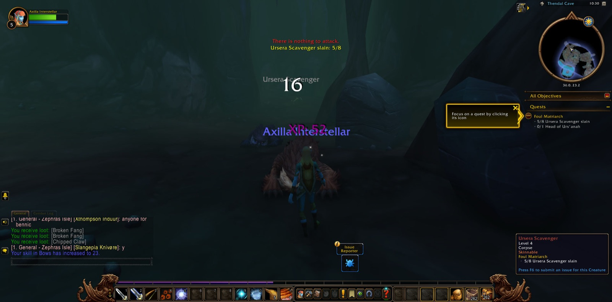
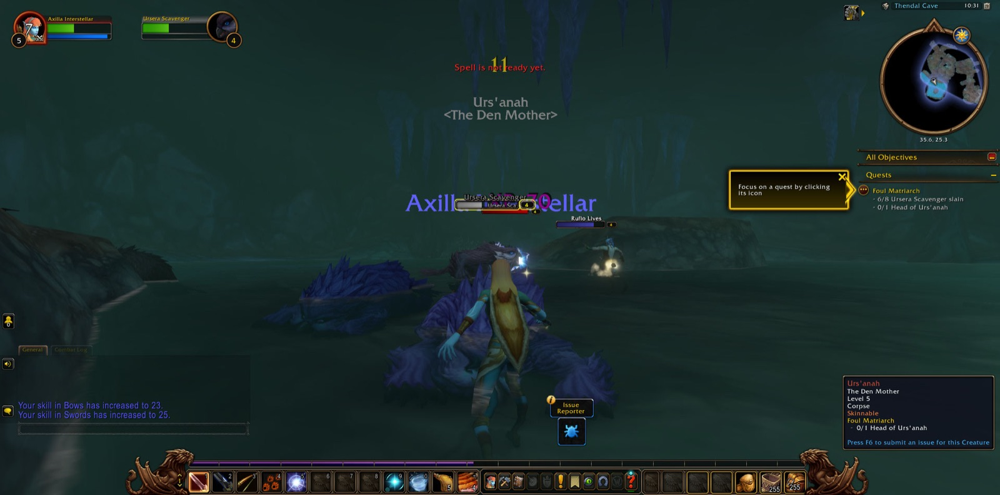

Axilla Interstellar set foot in Thendal Village a little past eleven in the morning, still finding her feet in the world. Rorian had her proving herself before she'd so much as unpacked — Coming of Age done in the same breath it was given — and then Thendal Grove opened before her, thick with juvenile vuldren. She cut through eight of them and felt the small, unmistakable lift of her first level arriving, a private thing worth pausing over even amid the work. Tai'ree Farsight sent her chasing a scribbled note through the Grove, and somewhere in the running and hunting she found herself airborne, testing Walk on Air with the reckless delight of someone discovering her legs work differently than she'd thought. The Anchors of Zephras, the windstones scattered through the grass, the Gift of Skysight used near an Elemental Convergence at the Standing Stones — Zephras Isle was teaching her its shape one quest at a time.


The Standing Stones cost her, too. Al'Aketh Converts and Roiling Winds crowded thick enough that she went down there for the first time, waking again in Thendal Village with the particular humility of a hunter still learning what she could survive. She came back for them anyway, cleared the Agitators' work, and climbed to level three with the wind still ringing in her ears.


The afternoon blurred into a longer hunt — Cirrusflies and their Queen, Scrawny Ursera and their claws, a cave where she and Urs'anah met and only one of them walked out. Al'Aketh Thugs cost her two more deaths, first in the Grove, then again after felling a Malduko Cloudcrush, but four, five, six arrived between the falls, each one steadier than the last.


Shen'dar Village welcomed her properly: a campfire, the Great Outdoors, a Boosted Rest buff earned by simply sitting still for once. Zerril Softbreeze taught her cooking. Illaya Amberwind spoke to her of the Windshapers. From there the quest board emptied into her log faster than she could walk it off — Prideclaws, hippogryphs, pilfered windstones, a matriarch named Vulgara still wanted. Windsong Lake and the Highlands took two more deaths from her, one on the lakeshore, one after felling her first Hippogryph Youth, but level seven came with the Prideclaw pelts all counted.


Near the end, a druid named Sky and a hunter named Ferroda fought beside her against a Hippogryph Matriarch — a short alliance, three minutes at most, gone again almost as soon as it began, Axilla dying moments after the matriarch fell. She walked back to Shen'dar Village alone, quests closed out, already tired in the good way.